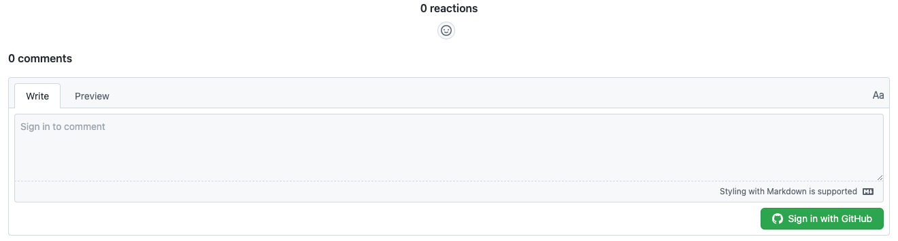
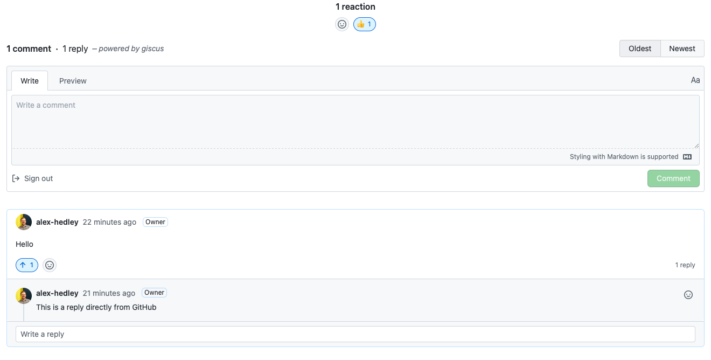
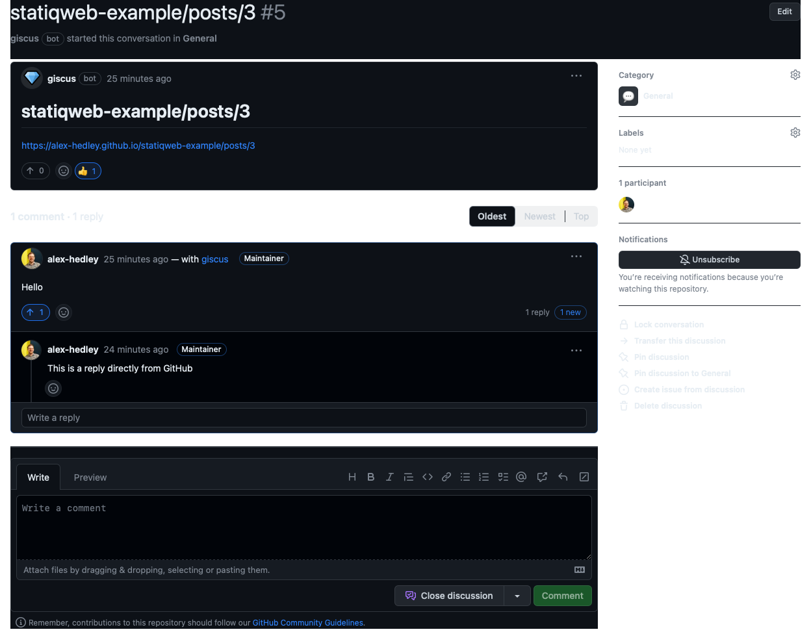

What's the best way to allow commenting on your blog? What better way than to have it contained in the system the blog lives in, GitHub. I've seen other solutions in the past which used GitHub Issues but this doesn't seem the right place for it.
Along comes giscus which has been built upon it's predecessors.
giscus - A comments system powered by GitHub Discussions. Let visitors leave comments and reactions on your website via GitHub! Heavily inspired by utterances.
In statiq.web there are a couple of ways to achieve this. The simplest one I've found is adding the following to your appsettings.json.
{
"CommentEngine": "giscus",
"GiscusRepoName": "",
"GiscusRepoId": "",
"GiscusCategoryId": ""
}
You then need to follow the instructions on giscus to grab the relevant Ids, but first enable Discussions on your repo. Next select your Configuration options then near the end of the page there will be an Enable giscus section to grab the above info.
Once you have updated these, just push and wait for the site to redeploy, check on a page and you'll have a option to comment, but first you have to sign in.

Once signed in you can comment:

See the actual post: https://alex-hedley.github.io/statiqweb-example/posts/3
Then directly on GitHub:

Link: https://github.com/alex-hedley/statiqweb-example/discussions/5
As this is live, you can comment in either place and it will be updated.
Example: https://github.com/TechWatching/techwatching.dev/blob/main/appsettings.json
Another option is to add a script tag to the _post-footer.cshtml custom page.
Update the script tag with the required attributes, taken from the giscus config page.
One issue with this is that it needs to go in the theme/input/_post-footer.cshtml folder.
I have pulled this in as a git submodule so I have tried how to use both. Thankfully the addition to the appsettings.json is enough, but if you wanted to change the layout, formatting etc I can see this being useful.
Blog Post: https://beckshome.com/2022/09/beckshome-on-statiq
Example: https://github.com/thbst16/dotnet-statiq-beckshome-blog/blob/main/theme/input/_post-footer.cshtml